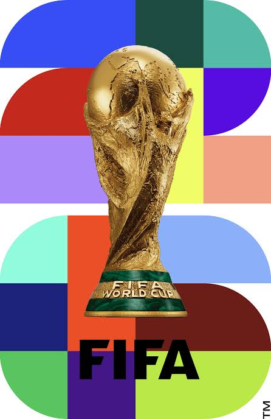

Oasis - Wonderwall

FIFA WORLD CUP
Evolusi Piala Dunia
Jelajahi Sejarah Bola, Maskot & Trofi dalam AR
Tiento & T-Model (1930)
📅 Tahun:
1930
🏆 Juara:
Uruguay
Sejarah bola akan muncul di sini...
Mulai AR (Lihat 3D & Putar Anthem)
Kembali
Nama Bola
📅 Tahun: -
🏆 Juara: -
📍 Tuan Rumah: -
👆 1 Jari: Putar 360° • 🤏 2 Jari: Zoom
🎵 Anthem
⚽ Bola
🧸 Maskot
🏆 Trofi